General Ignition Service · 22-01-02
General Information
The ignition system consists of a primary (low voltage) and a secondary (high voltage) circuit (Fig. 2).
The primary circuit consists of the:
-
Battery.
-
Ignition switch.
-
Primary circuit resistance wire.
-
Primary windings of the ignition coil.
-
Breaker points.
-
Condenser.
The secondary circuit consists of the:
-
Secondary windings of the ignition coil.
-
Distributor rotor.
-
Distributor cap.
-
High tension wires.
-
Spark plugs.
When the breaker points are closed, current flows from the battery through the ignition switch to the primary windings in the coil, then to ground through the closed breaker points. When the breaker points open, the magnetic field built up in the primary windings of the coil moves through the secondary windings of the coil, producing high voltage. High voltage is produced each time the breaker points open. The high voltage flows through the coil high tension lead to the distributor cap where the rotor distributes it to one of the spark plug terminals in the distributor cap. This process is repeated for every power stroke of the engine.
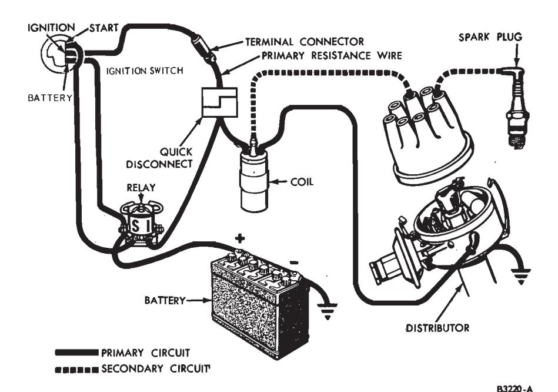
Fig. 2 — Typical Conventional Ignition System CircuitsIgnition system troubles are caused by a failure in the primary and/or the secondary circuit; incorrect ignition timing; or incorrect distributor advance. Circuit failures may be caused by shorts, corroded or dirty terminals, loose connections, defective wire insulation, cracked distributor cap or rotor, defective distributor points, fouled spark plugs, or by improper dwell angle.
If an engine starting or operating trouble is attributed to the ignition system, start the engine and verify the complaint. On engines that will not start, be sure the fuel system is operating properly and there is gasoline in the fuel tank. Then locate the ignition system problem by an oscilloscope test or by a spark intensity test.
Tests
Spark Intensity Test
Trouble Isolation
-
Disconnect the brown wire from the starter relay I terminal and the red and blue wire from the starter relay S terminal.
-
Remove the coil high tension lead from the distributor cap.
-
Turn on the ignition switch.
-
While holding the high tension lead approximately 3/16 inch from the cylinder head or any other good ground, crank the engine by using an auxiliary starter switch between the starter relay battery and S terminals.
If the spark is good, the trouble lies in the secondary circuit.
If there is no spark or a weak spark, the trouble is in the primary circuit, coil to distributor high tension lead, or the coil.
Primary Circuit
A breakdown or energy loss in the primary circuit can be caused by: defective primary wiring, or loose or corroded terminals; burned, shorted, sticking or improperly adjusted breaker points; a defective coil; or defective condenser.
A complete test of the primary circuit consists of checking the circuit from the battery to the coil, the circuit from the coil to ground, and the starting ignition circuit.
Excessive voltage drop in the primary circuit will reduce the secondary output of the ignition coil, resulting in hard starting and poor performance.
To isolate a trouble in the primary circuit, use a voltmeter and perform the following tests; Battery to Coil; Starting Ignition Circuit; Resistance Wire: Coil to Ground: or Breaker Points.
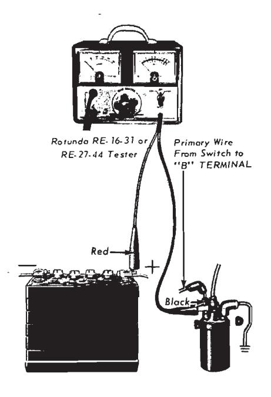
Fig. 3 — Battery-To-Coil and Starting Ignition Circuit Test
Secondary Circuit
A breakdown or energy loss in the secondary circuit can be caused by: fouled or improperly adjusted spark plugs; defective high tension wiring; or high tension leakage across the coil, distributor cap or rotor resulting from an accumulation of dirt.
To check the spark intensity at the spark plugs, thereby isolating an ignition problem to a particular cylinder, proceed as follows:
-
Disconnect a spark plug wire. Check the spark intensity of one wire at a time.
-
Install a terminal adapter in the terminal of the wire to be checked. Hold the adapter approximately 3/16-inch from the exhaust manifold and crank the engine, using a remote starter switch. The spark should jump the gap regularly.
-
If the spark intensity of all the wires is satisfactory, the coil, condenser, rotor, distributor cap and the secondary wires are probably satisfactory.
If the spark is good at only some wires, check the resistance of the faulty leads.
If the spark is equal at all wires, but weak or intermittent, check the coil, distributor cap and the coil to distributor high tension wire. The wire should be clean and bright on the conducting ends, and on the coil tower and distributor sockets. The wire should fit snugly and be bottomed in the sockets.
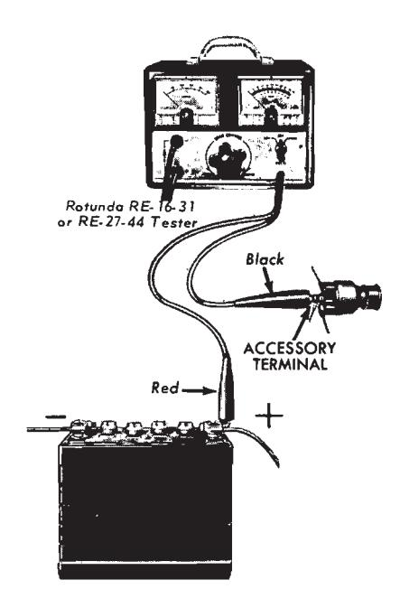
Fig. 4 — Ignition Switch Test
Battery to Coil Voltmeter Test
-
Connect the voltmeter leads as shown in Fig. 3.
-
Install a jumper wire from the distributor terminal of the coil to a good ground on the distributor housing.
-
Turn the lights and accessories off.
-
Turn the ignition switch on.
-
If the voltmeter reading is between 4.5 and 6.9 volts, the primary circuit from the battery to the coil is satisfactory.
-
If the voltmeter reading is greater than 6.9 volts, check the following:
The battery and cables for loose connections or corrosion.
The primary wiring for worn insulation, broken strands, and loose or corroded terminals.
The resistance wire for defects.
The starter relay to ignition switch for defects.
If the voltmeter reading is less than 4.5 volts the resistance wire should be replaced.
Starting Ignition Circuit Voltmeter Test
-
Connect the voltmeter leads as shown in Fig. 3.
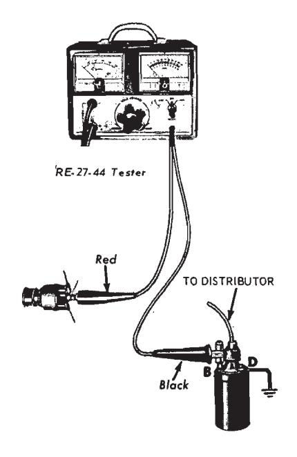
Fig. 5 — Resistance Wire Test -
Disconnect and ground the coil to distributor high tension lead at the distributor.
-
With the ignition switch off, crank the engine by installing a jumper wire between the battery and the S terminal of the starter relay while observing the voltage drop.
-
If the voltage drop is 0.1 volt or less, the starting ignition circuit is satisfactory.
-
If the voltage drop is greater than 0.1 volt, clean and tighten the terminals in the circuit or replace the wiring as necessary.
Ignition Switch Voltmeter Test
- Connect the voltmeter leads as shown in Fig. 4.
- Install a jumper wire from the distributor terminal of the coil to a good ground on the distributor body.
- Turn all of the accessories and lights off.
- Turn the ignition switch on.
- If the voltmeter reading is 0.3 volt or less, the ignition switch and the relay to switch wire are satisfactory.
- If the voltmeter reading is greater than 0.3 volt, either the ignition switch and/or the wire is damaged.
Resistance Wire Voltmeter Test
-
Connect the voltmeter leads as shown in Fig. 5.
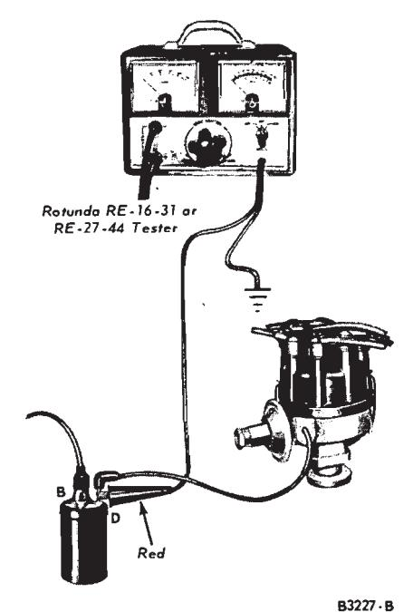
Fig. 6 — Coil to Ground Test -
Install a jumper wire from the DIST terminal of the coil to a good ground.
-
Turn all of the accessories and lights off.
-
Turn the ignition switch on.
-
If the voltmeter reading is between 6.6 and 4.5 volts, the resistance wire is satisfactory.
-
If the voltmeter reading is greater than 6.6 volts, or less than 4.5 replace the resistance wire.
-
Turn the ignition switch off. Disconnect the voltmeter leads. Remove the jumper wire connected to the coil DIST terminal and the distributor. Remove the jumper wire connected to the coil BAT terminal and the coil BAT lead. Connect the BAT lead to the BAT terminal and go on to the Coil to Ground Test.
Coil to Ground Voltmeter Test
-
Connect the voltmeter leads as shown in Fig. 6.
-
Close the breaker points.
-
Turn all lights and accessories off.
-
Turn the ignition switch on.
-
If the voltmeter reading is 0.25 volt or less, the primary circuit from coil to ground is satisfactory.
-
If the voltmeter reading is greater than 0.25 volt, test the voltage drop between each of the following:
The coil and the breaker point connections of the coil to distributor primary wire.
The movable breaker point and the breaker plate.
The breaker plate and the distributor housing.
The distributor housing and engine ground.
-
Turn the ignition switch off. Disconnect the voltmeter leads.
Breaker Points Check
Clean and inspect the breaker points by following the procedure under Cleaning and Inspection (Section 3 of this Part).
The breaker point dwell can be checked with a distributor tester or a dwell meter by following the procedure under Distributor Tests in this section of the manual.
The breaker point resistance can be checked with a Rotunda RE-1416 distributor tester by following the procedure under Distributor Tests in this section of the manual.
Coil Test
Clean and inspect the coil by following the procedure under Cleaning and Inspection (Section 3 of this part).
Check the coil on a coil tester by following the manufacturers instructions. Check for ohms resistance both primary and secondary. Also check the amperage draw both with the engine idling and stopped. These checks should all fall within specifications.
Secondary (High Tension) Wires Resistance Test
The secondary wires include the wires connecting the distributor cap to the spark plugs and the wire connecting the center terminal of the distributor cap to the center terminal of the ignition coil.
Clean and inspect the secondary wiring by following the procedure under Cleaning and Inspection (Section 3 of this Part).
These wires are the radio resistance-type which filter out the high frequency electrical impulses that are the source of ignition noise interference. The resistance of each wire should not exceed 1000 ohms per inch. When checking the resistance of the wires or setting ignition timing, do not puncture the wires with a probe. The probe may cause a separation in the conductor.
When removing the wires from the spark plugs grasp and twist the moulded cap, then pull the cap off the spark plug. Do not pull on the wire because the wire connection inside the cap may become separated or the insulator may be damaged.
To check the spark intensity at the spark plugs, proceed as follows:
-
Disconnect a spark plug wire. Check the spark intensity of one wire at a time.
-
Install a terminal adapter in the terminal of the wire to be checked. Hold the adapter approximately 3/16-inch from the exhaust manifold and crank the engine, using a remote starter switch. The spark should jump the gap regularly.
-
If the spark intensity of all the wires is satisfactory, the coil, condenser, rotor, distributor cap and the secondary wires are probably satisfactory.
If the spark is good at only some wires, check the resistance of the faulty leads.
If the spark is equal at all wires, but weak or intermittent, check the coil, distributor cap and the coil to distributor high tension wires.
Spark Plug Test
Inspect, clean, file the electrodes and gap the plugs following the instructions in Sections 2 and 3. After the proper gap is obtained, check the plugs on a testing machine. Compare the sparking efficiency of the cleaned and gapped plug with a new plug. Replace the plug if it fails to meet 70 percent of the new plug performance.
Test the plugs for compression leakage at the insulator seal. Apply a coating of oil to the shoulder of the plug where the insulator projects through the shell, and to the top of the plug, where the center electrode and terminal project from the insulator. Place the spark plug under pressure with the tester’s high tension wire removed from the spark plug. Leakage is indicated by air bubbling through the oil. If the test indicates compression leakage, replace the plug. If the plug is satisfactory, wipe it clean.
Distributor Shaft End Play Check
If the shaft end play is not to specifications, check the location of the gear on the shaft (6-cyl. engine distributor) or the distributor shaft collar (8-cyl. engine distributor).
6-Cylinder Engine Distributor
The shaft end play can be checked with the distributor installed on the engine.
- Mount a dial indicator on the distributor so that the indicator tip rests on the top of the distributor shaft.
- Push the shaft down as far as it will go and set the dial indicator on
- Pull the distributor shaft upward as far as it will go and read the end play. The end play should be within specifications with the distributor removed or installed.
8-Cylinder Engine Distributor
- Remove the distributor from the engine.
- Place the distributor in the holding tool and clamp it in a vise with the gear end up.
- Push the distributor shaft upward as far as it will go, and check the end play with a feeler gauge placed between the shaft collar and the distributor base. The end play should be within the specified limits. If the shaft end play is not to specifications, check the location of the distributor shaft collar.
Distributor Tests — Rotunda ARE-27-44 Dwell Tester
Test Connections
- Disconnect the distributor primary wire at the coil. Connect a short jumper wire to the DIST terminal of the coil and the distributor primary wire. Connect the red lead to the jumper wire.
- Connect the black lead to a good ground on the engine.
Dwell Angle Check
-
Disconnect the distributor vacuum line(s). Connect the tester.
-
Turn the test control knob to the set position.
-
Adjust the set control knob until the needle on the dwell meter lines up with the set line.
-
Start the engine and let it idle.
-
Turn the test control knob to the 8 CYL position for eight cylinder engines or to the 6 CYL position for 6 cylinder engines.
-
Read the dwell angle on the dwell meter and compare the reading to specifications.
-
Turn off the engine.
-
If the dwell angle was below the specified amount, the breaker point gap is too large. If the dwell angle was above the specified amount, the breaker point gap is too small.
If the dwell is to specifications, turn the test selector knob to the OFF position and disconnect the tester leads and jumper wire; then connect the distributor vacuum line(s).
Dwell Angle Adjustment
If the dwell angle is not within specifications, proceed as follows:
- Remove the coil high tension lead from the distributor and ground it
- Remove the distributor cap and place it out of the way.
- Disconnect the brown wire (I terminal) and the red and blue wire (S terminal) from the starter relay.
- Loosen the breaker point assembly retaining screw near the breaker point contacts.
- With the ignition on, crank the engine with an auxiliary starter switch connected between the battery and S terminals of the starter relay and terminals of the starter relay and adjust the gap to specifications.
- Release the auxiliary starter switch and tighten the breaker point assembly retaining screw.
- Since the adjustment may have changed when the retaining screw was tightened, crank the engine again with the auxiliary starter switch and check the dwell. When the dwell is properly adjusted, remove the jumper wire, auxiliary starter switch and tester leads and install the distributor cap, coil high tension lead and starter relay wires. Connect the distributor vacuum line(s).
Dual Breaker Point Dwell
If the distributor is equipped with dual breaker points, adjust the dwell of each set separately in order to get the specified combined dwell. The most precise method is to disconnect the wire to one set of points while adjusting the other, since spring tension on the cam is then equal. Alternately, a piece of plastic can be inserted between the contacts of one set to take it out of the circuit. As an example: where a 33 degree combined dwell is specified, the points are set separately at 25—25-1/2 degrees to secure the specified dwell.
Distributor Tests — Rotunda Distributor Tester
Mounting Distributor ARE-236 Testers
- Adjust the distributor support arm in relation to the distributor shaft length.
- Set the distributor in the support arm and enter the lower end of the distributor shaft in the Syncrograph chuck.
- Tighten the chuck on the distributor shaft, using the wrench located near the support arm column.
- Align the distributor shaft by shifting the support arm and distributor, and tighten the clamp screw.
- Clamp the distributor securely in the distributor support arm clamp so that it will not turn in its mounting.
- Connect the Syncograph test lead to the primary wire of the distributor.
- Connect the tester vacuum line to the vacuum diaphragm fitting.
ARE-14-16 Tester
- Clamp the distributor securely in the distributor support arm clamp so that it will not turn in its mounting.
- Loosen the hand-operated locking screw on the side of distributor support arm, and adjust the support arm column up or down by turning the crank on the knob at the top of the column until the distributor shaft or adapter shaft can be securely fastened in the driving chuck.
- Securely tighten the drive chuck to the distributor drive shaft by means of the chuck key, attached by a chain to the Synchrograph.
- Rotate the drive chuck by hand to make sure the distributor shaft turns freely and then tighten the locking screw on the distributor support arm.
- Connect the Synchrograph test lead to the primary or distributor-transistor lead wire of the distributor.
Breaker Point Resistance
ARE-14-16 Tester
- Turn the test selector to the POINT RES. position.
- Revolve the chuck by hand until the distributor breaker contacts are closed.
- The meter pointer on the cam angle meter should read in the OK zone at the left side of the meter scale to specifications. If the meter pointer does not fall in the OK zone, there is excessive resistance caused by a faulty contact across the distributor points, a faulty primary lead, or a poorly grounded base plate. A faulty contact across the distributor points indicates improper spring tension or burned or pitted points.
Insulation and Leakage ARE-236 and ARE-14-16 Testers
-
Turn the test selector to the cam angle position and revolve the chuck by hand until the distributor breaker contacts are open.
-
The cam angle meter should show a zero reading. If a zero reading is not obtained, a short circuit to ground exists.
A short could be caused by poor primary wire insulation, a shorted condenser or a short between the breaker arm and breaker plate.
Mechanical Operation — ARE-236 and ARE-14-16 Testers
- Turn the OFF, SET, CAM, SYNC. switch to the SET position.
- Adjust the SET TACH control so that tachometer pointer is on the SET line.
- Turn the OFF, SET, CAM, SYNC. switch to the SYNC. position.
- On an ARE-14-16 Tester, turn the test selector to the SYNCHRO. position and check to make sure that the drive chuck is securely tightened on the distributor shaft.
- Turn the MOTOR switch to the LEFT for 8 cylinder cars or to the RIGHT for 6 cylinder cars.
- Adjust the speed control to vary the distributor speed between 400 and 4000 engine rpm, or at the maximum speed of the engine on which the distributor is used. Erratic or thin faint flashes of light preceding the regular flashes as the speed of rotation is increased can be due to weak breaker arm spring tension or binding of the breaker arm on the pivot pin.
- Operate the distributor at approximately 2500 engine rpm and move the protractor scale so that the zero degree mark on the scale is opposite one of the neon flashes. The balance of all the flashes should come within 1 degree, plus or minus, evenly around the protractor scale. A variation larger than 1 degree or erratic or wandering flashes may be caused by a worn cam or distributor shaft or a bent distributor shaft.
Dwell Angle
-
Disconnect and plug the distributor vacuum line(s). On an ARE-236 Tester turn the OFF, SET, CAM, SYNC. switch to the CAM position. Operate the distributor at about 1000 rpm.
-
On an ARE-14-16 Tester, turn the cylinder selector to the 8 position.
Turn the test selector switch to the cam angle position and operate the distributor at approximately 1000 engine rpm.
-
Adjust the breaker point gap until the dwell angle is to specifications. Unplug and connect the distributor vacuum line(s).
Breaker Plate Wear
A worn breaker plate on the distributor will cause the breaker point gap and contact dwell to change as engine speed and load conditions are varied.
Adjust the test set to 0 degree advance, 0 inches vacuum, and 100 rpm. Adjust the dwell angle to 26 degrees. Apply vacuum to the distributor diaphragm and increase it very slowly while observing the indicated dwell angle. The maximum dwell angle variation should not exceed 6 degrees when going from zero to maximum vacuum at constant rpm. If the dwell angle variation exceeds this limit, there is excessive wear at the stationary subplate pin or the diaphragm rod is bent or distorted.
Distributor Advance and Retard Check — On Engine
Check the initial ignition timing, centrifugal advance, vacuum advance, and vacuum retard (dual-diaphragm distributor), following the procedure under Initial Ignition Timing Adjustment in Section 2 of this part.
Distributor Spark Advance Test — ARE-236 and ARE-14-16 Testers
The spark advance is checked to determine if the ignition timing advances in proper relation to engine speed and load.
Check the contact dwell. If the contact dwell is not within specifications, adjust the breaker points.
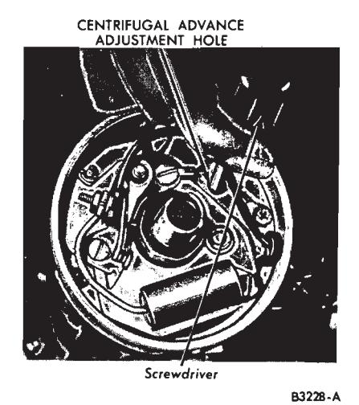
Fig. 7 — Centrifugal Advance Adjustment
Check the breaker arm spring tension and adjust it, if necessary.
The dual advance distributor has two independently operated spark advance systems. Each system is adjusted separately. Adjust the centrifugal advance before adjusting the vacuum advance.
Centrifugal Advance Adjustment
-
Operate the distributor in the direction of rotation (counterclockwise for eight cylinder, clockwise for six cylinder) and adjust the speed to the initial rpm setting listed in the specifications. Move the protractor scale so that one of the flashes lines up with the zero degree mark.
-
Slowly increase the rpm to the setting specified for the first advance reading listed in the specifications.
If the correct advance is not indicated at this rpm, stop the distributor and bend one spring adjustment bracket to change its tension (Fig. 7). Bend the adjustment bracket away from the distributor shaft to decrease advance (increase spring tension) and toward the shaft to increase advance (decrease spring tension). After the adjustment is made, identify the bracket.
-
After an adjustment has been made to one spring, check the minimum advance point again.
-
Operate the distributor at the specified rpm to give an advance just below the maximum. If this advance is not to specifications, stop the distributor and bend the other spring bracket to give the correct advance.
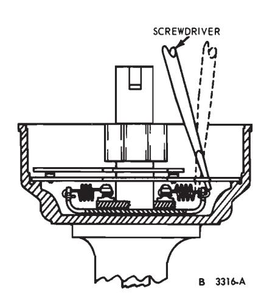
Fig. 8 — Centrifugal Advance Adjustment -
Check the advance at all rpm settings listed in the specifications. Operate the distributor both up and down the rpm range.
Vacuum Advance (Single or Dual Diaphragm) Adjustment
-
Connect the test set vacuum line to the fitting on the diaphragm.
-
Set the test set at 0 degree advance, 0 vacuum, and at 1000 rpm.
-
Check the advance at the first vacuum setting given in the specifications.
-
If the advance is incorrect, change the calibration washers between the vacuum chamber spring and nut (Fig. 9). After installing or removing the washers, position the gasket in place and tighten the nut. The addition of a washer will decrease advance and the removal of a washer will increase advance.
-
After one vacuum setting has been adjusted, the others should be checked. Do not change the original rpm setting when going to a different vacuum setting. If the other settings are not within limits, there is incorrect spring tension, leakage in the vacuum chamber and/or line, or the wrong fibre stop has been installed in the vacuum chamber of the diaphragm housing.
To check the diaphragm for leakage (either, or both on dual diaphragm distributors):
Install the distributor on a distributor tester. Do not connect the vacuum line to the distributor.
Adjust the vacuum pressure of a distributor tester to its maximum position. Hold your hand over the end of the tester’s vacuum hose and note the maximum reading obtained. Do not exceed 25 inches Hg.
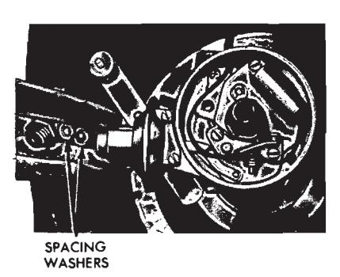
Fig. 9 — Vacuum Advance AdjustmentIf the maximum reading is 25 inches Hg or less, connect the tester’s vacuum line to the vacuum fitting on the diaphragm to be ‘tested without changing any of the adjustments. The maximum gauge reading should not be less than it was above. If it is less, the diaphragm is leaking and should be replaced.
Distributor Dual Diaphragm Test (On Engine)
Vacuum Advance
- Disconnect the vacuum lines from both the outer and inner diaphragms. Plug the line removed from the inner diaphragm.
- Using a tachometer, increase the idle speed by setting on the first step of the fast idle cam.
- Using a timing light observe ignition timing setting.
- Connect the carburetor vacuum line to the outer diaphragm. The timing should advance immediately. Adjust if necessary.
Vacuum Retard
-
Readjust the engine idle speed to 550-600 rpm.
-
Using a timing light observe the spark timing.
-
Remove the plug from the manifold vacuum line and connect the line to the inner diaphragm.
-
The timing should retard immediately. Replace the dual diaphragm unit if the retard portion is out of calibration, the advance portion cannot be calibrated to specifications, or either of the diaphragms are leaking.
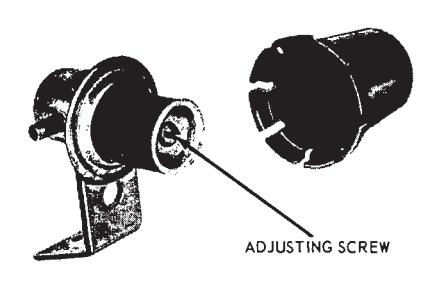
Fig. 10 — Distributor Vacuum Deceleration Valve Cover Removed
Distributor Vacuum Deceleration Valve Test
-
Connect a tachometer to the engine.
-
Start the engine and check engine idle speed. If required, adjust to normal specification with headlights on high beam.
-
Turn off the headlights and note engine idle rpm under this condition.
-
Remove the plastic cover (Fig. 10) from the distributor vacuum advance control valve exposing the adjusting screw. Slowly turn the adjusting screw counterclockwise without exerting excessive inward pressure. After five and no more than six turns, the idle speed should suddenly increase to approximately 1000 rpm. Any further turns outward will release the compressed spring and retainer washer. If the idle speed does not increase after the sixth turn, push inward on the end of the valve spring retainer and release. The engine idle speed will increase and stay at approximately 1000 rpm.
-
After the valve has been triggered to the higher rpm level, slowly start to turn the adjusting screw in a clockwise direction until the idle speed drops and remains at the same level as Step 3. Then make one additional turn in the clockwise direction.
-
After Step 5, increase engine speed to 2000 rpm, hold speed for approximately five seconds and then release throttle. The engine should return to idle, the speed noted in Step 3 within four seconds. If the idle speed does not return within four seconds, check the return time with the dashpot backed-off so that it does not contact the throttle lever at idle speed and repeat the rundown check from 2000 rpm.
-
If the engine will not return to the idle speed of Step 3, in three seconds with dashpot backed-off, turn adjustment screw an additional onequarter turn in a clockwise direction and repeat the rundown check from 2000 rpm.
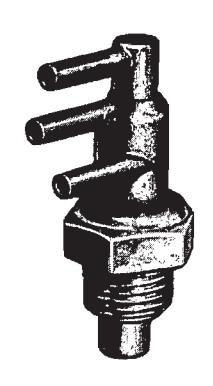
Fig. 11 — Distributor Vacuum Control Valve -
Repeat Step 7, if necessary, with one-quarter turn increments, checking the idle return time after each one-quarter turn until the engine returns to idle within the required time. Note: If it takes more than one complete turn from Step 5 to meet the idle return time specification, the valve should be replaced.
Distributor Vacuum Control Valve Test (Coolant Temperature Sensing Valve)
The Distributor Vacuum Control Valve is shown in Fig. 11.
-
Make certain that all vacuum hoses are properly routed and installed.
-
Attach a tachometer to the engine.
-
Bring the engine up to operating temperature and be certain that the choke plate is in the vertical position. Engine must not be overheated.
-
Note the engine idle rpm with transmission in neutral and carburetor throttle in the curb idle position.
-
Disconnect the vacuum hose from the intake manifold at the temperature sensing valve and plug or clamp the hose.
-
Note engine idle rpm with the hose disconnected. If no change in idle speed, the valve is acceptable up to this point. If there is a drop in idle speed of 100 rpm or more, the valve should be replaced.
-
Install vacuum line on manifold fitting; then verify that the all season cooling mixture is up to specifications, and that the correct radiator cap is installed.
-
Cover the radiator sufficiently to induce a high temperature condition.
-
Continue to run the engine until the red high temperature light comes on or the temperature indicated on the temperature gauge is at the high end of the band indicating an above normal temperature.
If the engine idle speed has by this time increased 100 rpm or more, the temperature sensing valve is satisfactory. If not, it should be replaced. Do not overheat the engine.
Electronic Distributor Modulator Test
The components of the electronic distributor modulator are shown in Fig. 12. This system should be checked when loss of engine performance and excessive fuel consumption are reported. Road test symptons will be those of retarded ignition timing. To check the system:
- Connect a vacuum gauge to the large hose connection of electronic module.
- Elevate the rear wheels of the vehicle
- Start the engine with the transmission in neutral. The vacuum gauge should read zero.
- With transmission in gear, slowly accelerate to 40 mph.
- Vacuum should cut in between 21 to 31 mph. At some speed in this range the vacuum should drop to zero and remain there.
- Allow the vehicle to coast down from 25 to 15 mph. At some speed in this range the vacuum should drop to zero and remain there.
- With the transmission in neutral and engine running at fast idle speed (approx. 1500 rpm), chill the thermal switch. There should be a vacuum reading.
- If unit checks out O.K., there is no need to proceed further. If not, proceed as follows:
Power Supply
- Check supply voltage at the red wire leading to the control module with ignition switch on. Meter should read the battery voltage.
- If meter reads zero, check the fuse and wiring from the ignition switch.
Thermal Switch
-
Check the thermal switch by disconnecting the multiple plug and insert an ohmmeter from the gray wire (coming from the switch) to ground.
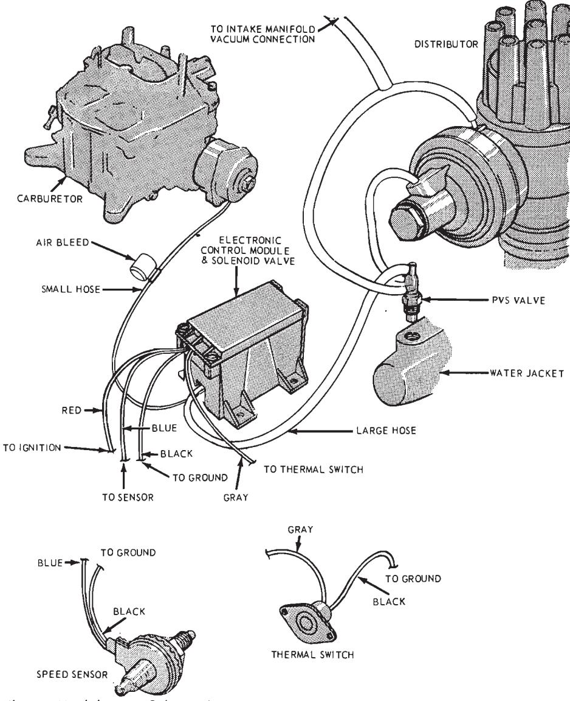
Fig. 12 — Distributor Modulator — Schematic -
Place one hand on the thermal switch and allow the thermal switch to warm up. The switch should now be open (the switch is normally open above 68 degrees F).
-
Chill the thermal switch, using ice, a cold object or by evaporation, using an aerosol starting fluid (ether) spray. Allow the thermal switch to cool off. The switch should now be closed (the switch is normally closed below 58 degrees F).
-
Replace the switch with a known good one if it is broken or inoperative
Control Module
- Leave the plug disconnected and insert a jumper between the two red wires on vehicles where the red wires are joined at this plug. Otherwise, leave plug disconnected.
- Run the engine on fast idle—1500 rpm (approx.).
- Connect a vacuum gauge at the carburetor spark port vacuum connection—record gauge reading.
- Reconnect vacuum line to carburetor.
- Connect a vacuum gauge at PVS connection (large hose connection) of solenoid valve.
- Vacuum gauge should read 0 inch Hg.
- Ground the system end of the gray wire at thermal switch multiple plug where the switch is unhooked from circuit.
- Gauge reading should be the same as in step 6.
- Return engine to normal idle speed.
- Replace module if reading is incorrect in either step 6 or 8.
Speed Sensor
-
Remove jumper from the gray wire. Leave the switch disconnected.
-
Raise the vehicle on a hoist.
-
Run the vehicle (in gear) to 32 mph. Vacuum gauge should read a vacuum.
-
Check the speed sensor for continuity. Resistance of the speed sensor is 40-60 ohms (at room temperature). Also check the resistance of the speed sensor to ground. The resistance should be an open circuit.
-
Replace the speed sensor if meter reading is incorrect in step 4 and repeat step 3. If vacuum gauge still reads zero, replace the electronic module package. Tighten the nut on the speed sensor to 19-25 in-lbs to eliminate noise in the speedometer cable system.
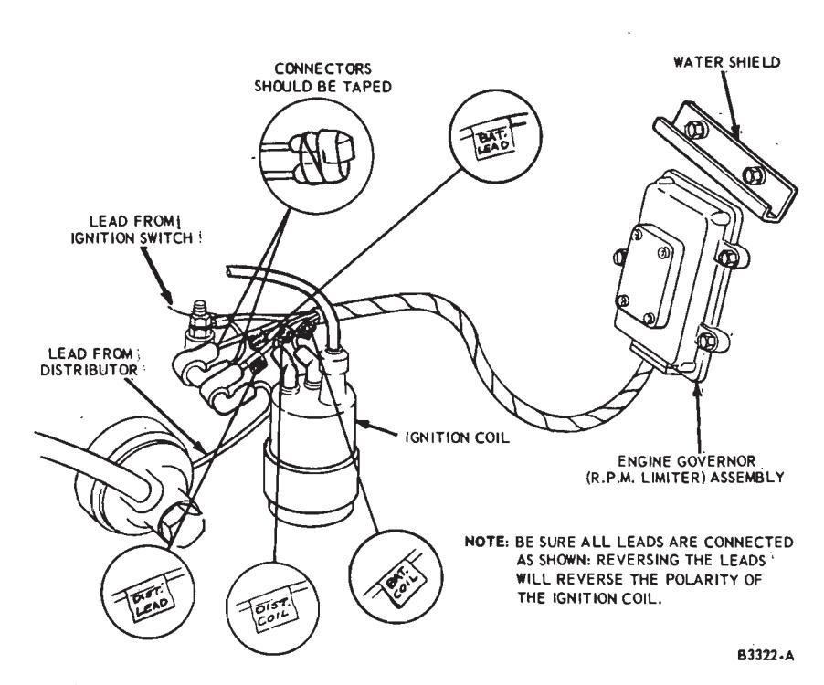
Fig. 13 — RPM Limiter Connected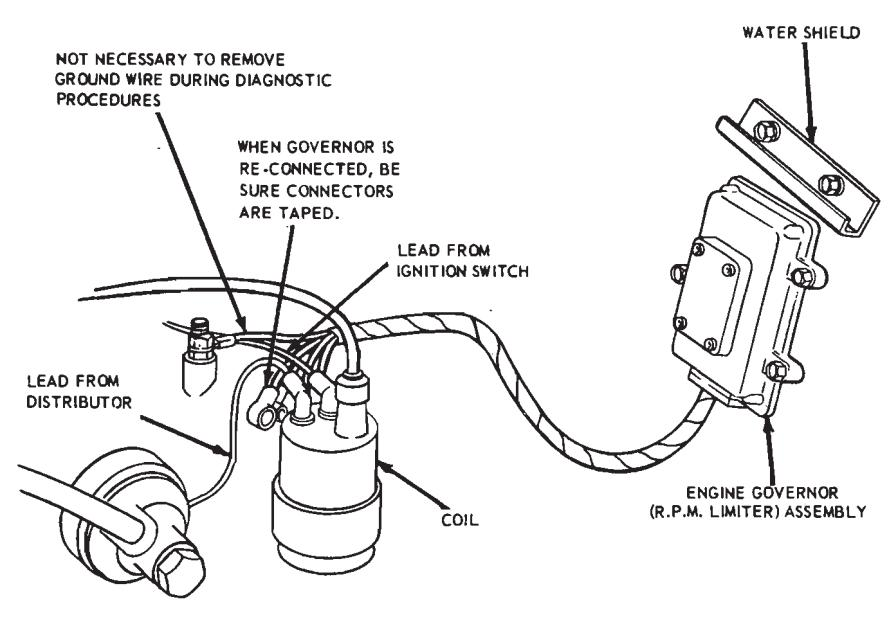
Electronic RPM Limiter (Governor) Test
This device (Fig. 13) is used on high-performance engines to prevent engine overspeed. It is mounted in series with the primary circuit and grounds out the primary current to the distributor when the engine rpm exceeds $6000 \ (\pm 50 \ \text{rpm})$. The engine then acts as though the spark plugs were fouling out. This prevents accidental overspeed while shifting, etc.
Dwell angle is critical when this device is used, and the engine may misfire at about 3000 rpm if the dwell angle is more than 3 degrees below the specified minimum setting.
Improper operation of the governor usually results in an enginewon’t-start condition, misfiring, or loss of rpm limiting action.
-
In a case of engine-won’t-start, begin by making a coil spark intensity test as outlined in this Part. If the coil checks out, inspect the distributor cap, spark plug wires and fuel system for correct operation. If the spark from the coil is weak or no spark is observed, check all the electrical connections in the primary circuit. If these all check out, take the governor out of the circuit as shown in Fig. 14. If this corrects the trouble, replace the governor. If not, check the coil on a bench tester and check the primary circuit for continuity. Replace or repair as required.
-
If engine has an intermittent misfire below 6000 rpm, first verify that the dwell angle is within specification (30 degree—33 degree). If this is correct, take the governor out of the circuit (Fig. 14). If the mis-fire continues, check the fuel system and secondary ignition wiring system. Replace or repair as necessary. If the mis-fire is corrected when the governor is out of the circuit, replace the governor.
-
In cases of loss of rpm control above 6000 rpm, replace the governor.
FIG. 14—RPM Limiter Disconnected
In Vehicle Adjustments and Repairs
General Procedures
Accurate ignition system adjustments are of great importance in the control of hydro-carbon and carbon monoxide emissions for reducing air pollution.
After any adjustment of ignition timing and distributor point dwell, check the distributor automatic advance for proper operation.
To keep engine emission control within the limits of government regulations, the carburetor fuel mixture and idle speed adjustments should be checked after making ignition system adjustments. Also the exhaust control valve (if so equipped), crankcase ventilation system, and vacuum systems must be in good operating condition. Refer to the applicable group in this manual for maintenance and repair procedures.
Breaker Points and/or Condenser
Removal
- Remove the distributor cap and the rotor.
- Disconnect the primary and the condenser wires from the breaker point assembly.
- Remove the breaker point assembly and condenser retaining screws. Lift the breaker point assembly and condenser out of the distributor.
Installation
- Place the breaker point assembly and the condenser in position and install the retaining screws. Be sure to place the ground wire under the breaker point assembly screw farthest from the breaker point contacts on an eight cylinder engine distributor or under the condenser retaining screw on a six cylinder engine distributor.
- Align and adjust the breaker point assembly.
- Connect the primary and condenser wires to the breaker point assembly.
- Install the rotor and the distributor cap.
Breaker Point Alignment
The vented-type pivoted breaker points must be accurately aligned and strike squarely to assure normal breaker point life. Misalignment of these breaker point surfaces can cause premature wear, overheating and pitting.
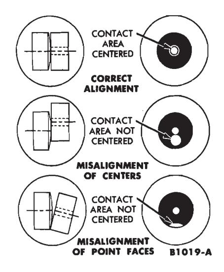
Fig. 15 — Checking Breaker Point Alignment — Pivoted Points
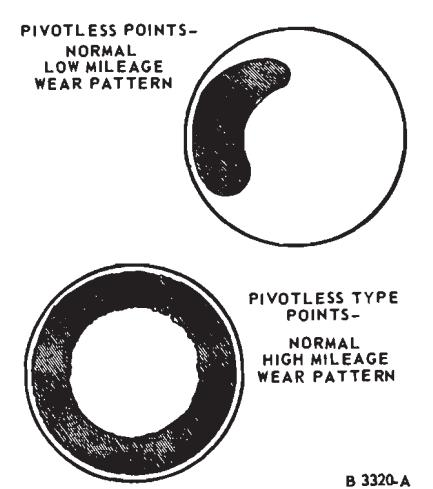
Fig. 16 — Pivotless Point Wear Pattern
However, misalignment of pivotless points is not so critical, and as Fig. 16 indicates, alignment tends to improve with use.
-
Turn the cam so that the breaker points are closed and check the alignment of the points (Fig. 15).
If the distributor is in the engine, close the points by proceeding as follows:
Disconnect the brown wire and the red and blue wire from the starter relay and, with the ignition switch off, crank the engine by using an auxiliary starter switch between the S and the battery terminals of the starter relay.
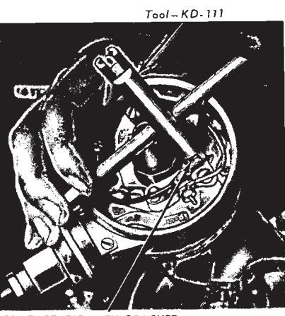
Fig. 17 — Aligning Breaker Points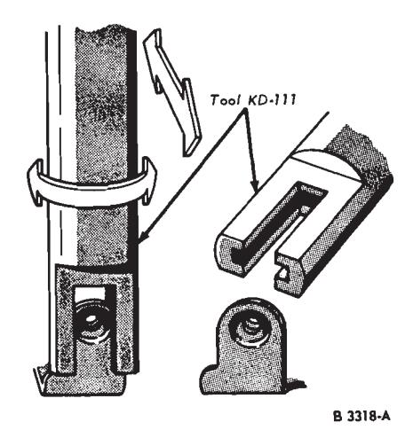
Fig. 18 — Using Alignment Tool -
Using the tool shown and exerting very light pressure, align the breaker points to make full face contact by bending the stationary breaker point bracket (Figs. 17 and 18). Do not bend the breaker arm.
-
After the breaker points have been properly aligned, adjust the breaker point gap or dwell.
Breaker Point Gap Adjustment
A scope, a dwell meter, or a feeler gauge can be used to check the gap of new breaker points.
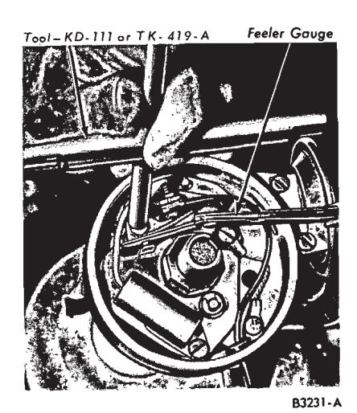
Fig. 19 — Adjusting New Breaker Point Gap
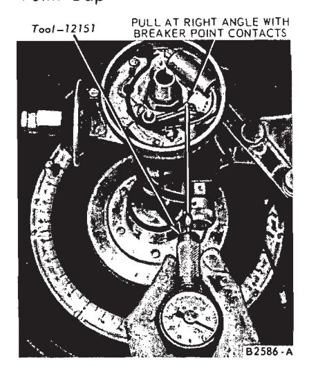
Fig. 20 — Checking Breaker Point Spring Tension
A scope or a dwell meter should be used to check the gap of used breaker points. Due to the roughness of used points, it is not advisable to use a feeler gauge to check the gap.
To check and adjust the breaker points with a feeler gauge:
-
Check and adjust the breaker point alignment.
-
Rotate the distributor until the rubbing block rests on the peak of a cam lobe.
If the distributor is in the engine, place the rubbing block on the peak of the cam by proceeding as follows:
Disconnect the brown wire and the red and blue wire from the starter relay and, with the ignition switch off, crank the engine by using an auxiliary starter switch between the S and battery terminals of the starter relay.
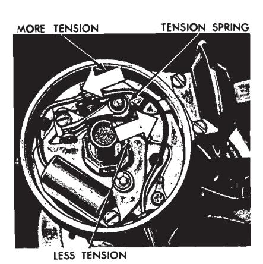
Fig. 21 — Adjusting Breaker PointInsert the correct blade of a clean feeler gauge between the breaker points (Fig. 19). Adjust the points to the correct gap and tighten the screws.
Apply a light film of distributor cam lubricant (C4AZ-19D530-A) to the cam when new points are installed. Do not use engine oil to lubricate the distributor cam.
Set the ignition timing.
Spring Tension
If a scope or a dwell meter is used to adjust new points, be sure the points are in proper alignment. Also, set the contact dwell to the low setting.
To check and adjust the breaker points with a scope, refer to the scope manufacturer’s instructions.
To check and adjust the breaker points with a dwell meter, refer to Distributor Tests—Rotunda ARE-27-55 Dwell Tester.
Breaker Point Spring Tension Adjustment
Correct breaker point spring tension is essential to proper engine operation and normal breaker point life. If the spring tension is too great, rapid wear of the breaker arm rubbing block will result, causing the breaker point gap to close up and retard the spark timing. If the spring tension is too weak, the breaker arm will flutter at high engine rpm resulting in an engine miss.
To check the spring tension on either the pivot-type of the pivotless breaker points, place the hooked end of the spring tension gauge over the movable breaker point. Pull the gauge at a right angle (90 degrees) to the movable arm until the breaker points just start to open (Fig. 20). If the tension is not within specifications, adjust the spring tension on the pivottype points or replace the breaker point assembly on the pivotless points.
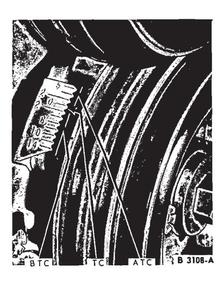
Fig. 22 — Six Cylinder Engine Timing Marks
To adjust the spring tension (Fig. 21):
- Disconnect the primary lead wire and the condenser lead.
- Loosen the nut holding the spring in position. Move the spring toward the breaker arm pivot to decrease tension and in the opposite direction to increase tension.
- Tighten the lock nut; then check spring tension. Repeat the adjustment until the specified spring tension is obtained.
- Install the primary lead wire and the condenser lead.
Ignition Timing
Timing Mark Locations
The timing marks and their locations are illustrated in Figs. 22, 23 and 24.
For checking and adjusting the ignition timing with a scope refer to the scope manufacturer’s instructions. To check and adjust the timing with a Rotunda 13-07 power timing light, proceed as follows:
Initial Ignition Timing
-
Clean and mark the timing marks. Be sure the distributor vacuum lines are properly connected.
-
Disconnect the vacuum line (single-diaphragm distributors) or vacuum lines (dual-diaphragm distributors), and plug the disconnected vacuum line(s).
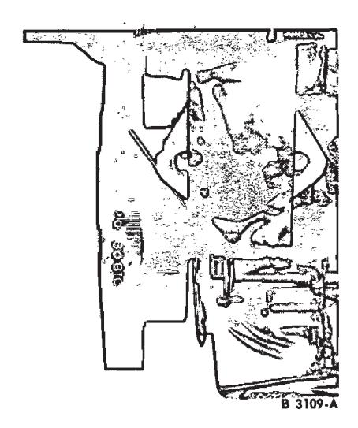
Fig. 23 — V-8 Engine Timing Marks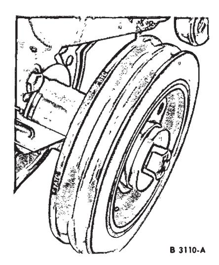
Fig. 24 — V-8 Engine Timing Marks (390-428 Engines) -
Connect a timing light to the No. I cylinder spark plug wire. Install an engine speed tachometer.
-
Start the engine and reduce the idle speed to 600 rpm to be sure that the centrifugal advance is not operating. Adjust the initial ignition timing to specifications by rotating the distributor in the proper direction. On a six cylinder engine turn the distributor counterclockwise to advance the timing. On a V-8 engine turn the distributor clockwise to advance the timing.
-
Check the centrifugal advance for proper operation. Start the engine and accelerate it to approximately 2000 rpm. If the ignition timing advances, the centrifugal advance mechanism is functioning properly. Note the engine speed when the advance begins and the amount of advance. Stop the engine.
-
Unplug the vacuum line and connect it to the distributor vacuum advance unit (outer diaphragm on dual diaphragm distributors). Start the engine and accelerate it to approximately 2000 rpm. Note the engine speed when the advance begins and the amount of advance. Advance of the ignition timing should begin sooner and advance farther than when checking the centrifugal advance alone. Stop the engine.
-
Check the vacuum retard operation on dual-diaphragm distributors. Connect the intake manifold vacuum line to the inner (retard) diaphragm side of the vacuum advance. Reset the carburetor to normal idle speed. The initial timing should retard to approximately TDC, if the initial ignition timing is correct. On some engines it will go as low as 6 degrees ATDC (see specifications-this Part).
-
If the vacuum advance or vacuum retard (dual-diaphragm distributors) is not functioning properly (refer to steps 6 and 7 above), remove the distributor and check it on a distributor tester. Replace the dual diaphragm unit if the retard portion is out of calibration, the advance portion cannot be calibrated to specifications, or either of the diaphragms are leaking.
Spark Plug Wire Removal and Installation
When removing the wires from the spark plugs, grasp, twist and pull the moulded cap only. Do not pull on the wire because the wire connection inside the cap may become separated or the boot may be damaged.
Six Cylinder Engines
The ignition wiring installation for this engine is shown in Fig. 38.
Removal
- Disconnect the wires at the spark plugs and at the distributor cap.
- Remove the coil high tension lead.
Installation
- Connect the wires to the proper spark plug.
- Install the wires in the correct sockets in the distributor cap. Be sure the wires are forced all the way down into their sockets and that they are held firmly in position. The No. I socket is identified on the cap. Install the wires in a clockwise direction in the firing order (1-5-3-6-2-4) starting at the No. I socket.
- Install the coil high tension lead. Push all spark plug boots into position
All V-8 Engines
The ignition wiring installation is shown in Fig. 28.
Removal
- Disconnect the wires from the spark plugs and distributor cap.
- Pull the wires from the brackets on the valve rocker arm covers and remove the wires.
- Remove the coil high tension lead.
Installation
- Insert each wire in the proper socket of the distributor cap. Be sure the wires are forced all the way down into their sockets. The No. I socket is identified on the cap. Install the wires in a counterclockwise direction in the firing order (1-5-4-2-6-3-7-8) starting at the No. I socket. For 351 V-8 engines the firing order is (1-3-7-2-6-5-4-8). Cylinders are numbered from front to rear; right bank 1-2-3-4, left bank 5-6-7-8.
- Remove the brackets from the old spark plug wire set and install them on the new set in the same relative position. Install the wires in the brackets on the valve rocker arm covers. Connect the wires to the proper spark plugs. Install the coil high tension lead. Be sure the No. 7 spark plug wire is positioned in the bracket as shown in Fig. 28. Notice that the wires are positioned in this bracket in a special order from front to rear (7-5-6-8). This applies to all V-8 engines except the 351 engine. The wires for the 351 V-8 should be positioned in the bracket from front to rear (5-7-8-6).
Spark Plugs
Removal
-
Remove the wire from each spark plug by grasping, twisting at then pulling the moulded cap of the wire only. Do not pull on the wire be- cause the wire connection inside the cap may become separated or the weatherseal may be damaged.
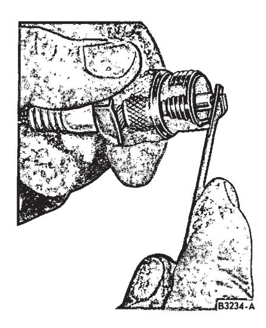
Fig. 25 — Filing Spark Plug Electrode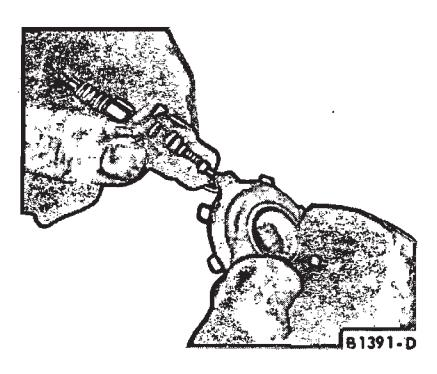
Fig. 26 — Checking Spark Plug Gap -
After loosening each spark plug one or two turns, clean the area around each spark plug port with compressed air, then remove the spark plugs.
After cleaning (Part 22-01, Section 3) the electrodes must be dressed with a small file to obtain flat parallel surfaces on both the center and side electrodes (Fig. 25). Set the spark plug gap to specifications by bending the ground electrode (Fig. 26): all spark plugs new or used should have the gap checked and reset as required.
Installation
-
Install the spark plugs and torque each plug to specifications.
When a new spark plug is installed in a new replacement cylinder head, torque the plug to new plug specifications.
-
Connect the spark plug wires.
Resistance Wire Removal and Installation
Ford, Mercury and Meteor
- Disconnect the battery cable.
- Remove the hard shell connector from the back of the ignition switch to facilitate removal of the defective resistor wire and for the addition of terminals, and a double female connector to receive one end of the new resistor wire assembly.
- Cut the defective (pink) resistor wire approximately 1 inch from the ignition switch hard shell connector and tape to the existing red-yellow stripe wire. Completely cover the end of the pink wire with tape.
- Cut the red-yellow stripe wire approximately 2 inches from the hard shell connector and install a bullet terminal (FDT-14461-A) on both wire ends. Connect together with a double female connector (FDT-14487-B) and plug in the new resistor wire.
- Reassemble the ignition switch hard shell connector and attach all accessory wires.
- Route and tape the new resistor wire along the main wiring harness to the quick disconnect plate at the left side of the instrument panel.
- Disconnect the body main wiring assembly from the mating connector attached to the quick disconnect plate. Cut the red-green stripe wire as close to the connector as possible. Install a bullet terminal (FDT-14461-A) on the cut wire. Connect the red-green wire and the remaining end of the pink resistor wire with a single female connector (FDT-14487-A). Reassemble the hard shell connector to the plate.
- Connect the battery.
Cougar, Fairlane, Falcon, Montego and Mustang
- Disconnect the battery.
- Disassemble the cluster housing from the instrument panel to expose the main instrument panel wiring.
- Looking through the cluster opening near the center of the instrument panel, locate the single female connector with the red-green stripe and the red-yellow stripe wire. Disconnect the pink resistor wire and cut as close to the harness as possible.
- Connect the new resistor wire assembly and route through the existing retainers along the harness to the multiple connector on the left hand side of the dash panel. Use tape to supplement the existing retainers to prevent wire from hanging loosely.
- Cut the damaged pink resistor wire approximately I inch from the multiple connector and tape to the red-green stripe wire for the purpose of insulation.
- Cut the red-green stripe wire approximately 1 inch from the taped portion and assemble a bullet terminal to each of the wire ends. Assemble a double connector between the two wire ends. Connect the remaining end of the new resistor wire into the double connector.
- Connect the battery.
Continental
The primary resistance wire is checked for excessive resistance as outlined under Ignition System Tests.
To replace the resistance wire:
- Disconnect the battery.
- Remove the instrument panel lower housing from the instrument panel.
- Disconnect the green multiple connectors.
- Cut the pink resistor wire approximately 1-inch from the green multiple connector and tape it to the red-yellow stripe wire. Cover the cut end of the pink resistor wire with tape.
- Cut the red-yellow stripe wire approximately 1-inch from the taped portion and assemble a bullet terminal to each of the wire ends. Assemble a double female connector between the two wire ends. Connect one end of the new resistor wire into the connector.
- Route the new resistor wire along the body main wiring to the red multiple connector below the circuit breaker panel.
- Cut the red-green stripe wire close to the red multiple connector. Install a bullet terminal on the cut wire. Connect the red-green stripe wire and the end of the pink resistor wire with a single female connector.
- Connect the battery.
Thunderbird and Mark III
The primary resistance wire is checked for excessive resistance as outlined under Ignition System Tests.
To replace the resistance wire:
-
Disconnect the battery.
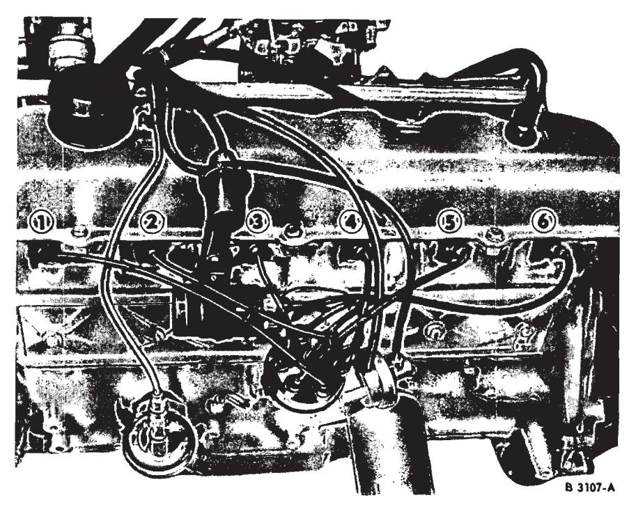
Fig. 27 — Typical Six Cylinder Ignition Wiring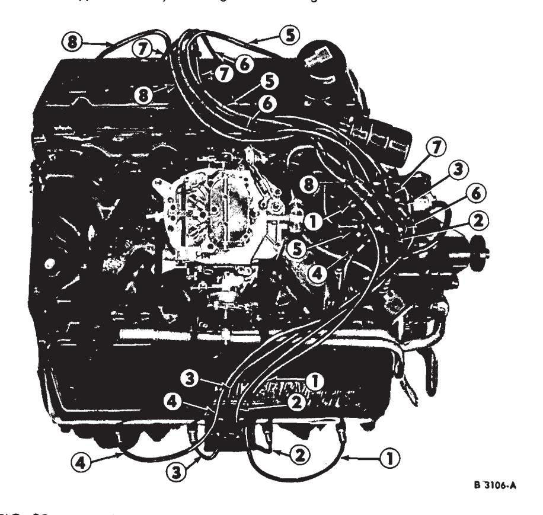
Fig. 28 — Typical V-8 Ignition Wiring (Except 351 Engines) -
Remove the headlight switch and mounting plate, the push on instrument panel lower finish panel outer moulding, the right hand side finish panel pad and retainer assembly. Disassembly of these components is further described in Group 33 of this Shop Manual.
-
Locate the end of the damaged pink resistor wire connected to the single female connector attached to the two (red-green stripe) wires near the fuse panel in the lower center instrument panel. Disconnect the damaged pink resistor wire, and cut as close to the harness as possible.
-
Connect the new resistor wire assembly and route along the harness to the multiple connector located on the left hand side of the instrument panel above the headlight switch. Use tape to supplement the existing retainers to prevent wire from hanging loosely.
-
Disconnect the green multiple connector with the damaged pink resistor wire from the mating green connector to facilitate the cutting and addition of a bullet terminal, and a single female connector.
-
Cut the (red; green stripe) wire as close to the green connector as possible. Attach, a bullet terminal (FDT-14461-A) and a single female connector (FDT-14487-A) to the cut wire end. Connect with the new replacement resistor wire.
-
Install the right side finish panel pad and retainer assembly, the push on instrument panel lower finish panel outer moulding and the headlight switch and mounting plate.
-
Connect the battery.
Cleaning and Inspection
Spark Plugs
Examine the firing ends of the spark plugs, noting the type of deposits and the degree of electrode erosion. Refer to Fig. 29 for the various types of spark plug fouling and their causes.
Clean the plugs on a sand blast cleaner, following the manufacturer’s instructions. Do not prolong the use of the abrasive blast as it will erode the insulator and electrodes.
Examine the plug carefully for cracked or broken insulators, badly pitted electrodes, and other signs of failure. Replace as required.
Distributors
Soak all parts of the distributor assembly (except the condenser, breaker point assembly, lubricating wick, vacuum diaphragm, distributor base oil seal and electrical wiring) in a mild cleaning solvent or mineral spirits. Do not use a harsh cleaning solution. Wipe all parts that can not be immersed in a solvent with a clean dry cloth.
After foreign deposits have been loosened by soaking, scrub the parts with a soft bristle brush. Do not use a wire brush, file, or other abrasive object. Dry the parts with compressed air.
Examine the bushing surface(s) of the distributor shaft and the bushing(s) for wear.
Inspect the distributor cam lobes for scoring and signs of wear. If any lobe is scored or worn, replace the cam assembly.
Inspect the breaker plate assembly for signs of distortion. In addition, on the dual advance distributor, inspect the stationary sub-plate for worn nylon contact buttons. Replace the breaker plate assembly if it is defective.
The breaker point assembly(ies) and condenser (if so equipped) should be replaced whenever the distributor is overhauled.
Inspect all electrical wiring for fraying, breaks, etc., and replace any that is not in good condition.
Check the distributor base for cracks or other damage.
Check the diaphragm housing, bracket, and rod for damage. Check the vacuum line fitting for stripped threads or other damage. Test the
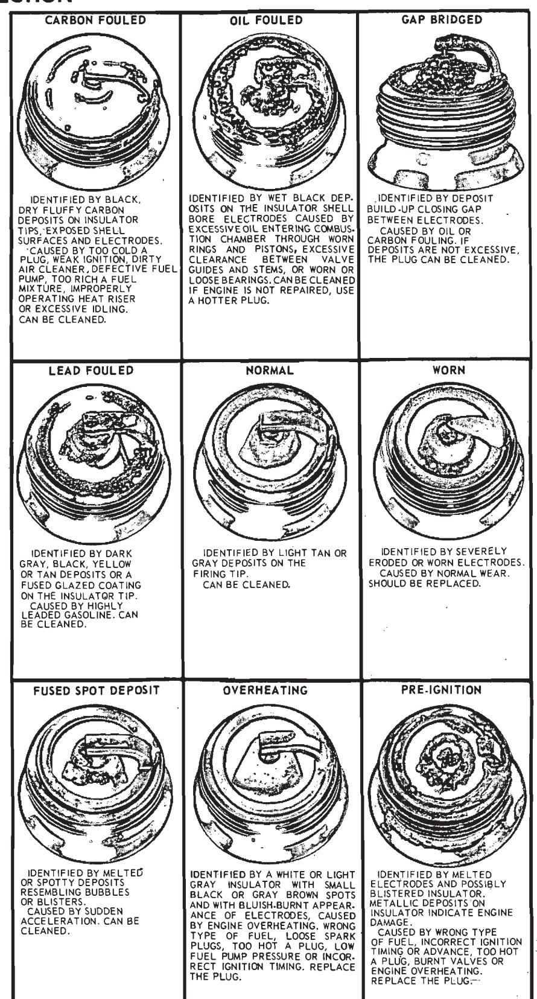
Fig. 29 — Spark Plug Inspection
| CONDITION | CAUSED BY |
|---|---|
| BURNED | Incorrect voltage regulator setting. Radio condenser installed to the distributor side of the coil. |
| EXCESSIVE METAL TRANSFER OR PITTING | Incorrect alignment. Incorrect voltage regulator setting. Radio condenser installed to the distributor side of the coil. Ignition condenser of improper capacity. Extended operation of the engine at speeds other than normal. B1443-C |
Fig. 30 — Breaker Point Inspection
vacuum fittings, case and diaphragm for leakage as explained under Distributor Tests. Replace all defective parts.
The breaker point assembly consists of the stationary point bracket assembly, breaker arm and the primary wire terminal.
Breaker points should be inspected, cleaned and adjusted as necessary. Breaker points can be cleaned with chloroform and a stiff bristle brush. Replace the breaker point assembly if the contacts are badly burned or excessive metal transfer between the points is evident (Fig. 30). Metal transfer is considered excessive when it equals or exceeds the gap setting.
Distributor Cap
Clean the distributor cap with a soft bristle brush and mild cleaning solvent or mineral spirits. Dry the cap with compressed air. Inspect the cap for cracks, burned contacts, broken carbon button, permanent carbon tracks or dirt or corrosion in the sockets. Replace the cap if it is damaged.
Rotor
Clean the rotor with a soft bristle brush and mild cleaning solvent or mineral spirits. Dry the rotor with compressed air. Inspect the rotor for cracks or burning. Replace the rotor if it is corroded or damaged.
Secondary Wiring
Wipe the wires with a damp cloth and check for fraying, breaks or cracked insulation. Inspect the terminals and boots for looseness or corrosion. Replace any wires that are not in good condition.
Coil
Wipe the coil with a damp cloth and check for any cracks or other defects.
Special Tools
Special Tools
| Tool Description | Tool No. |
|---|---|
| Breaker Point Aligning Tool | KD-111 or TK-419-A |
| Breaker Point Spring Tension Scale | 12151 |
| Bushing Burnisher | 12132 |
| Bushing Installer | T57L-12120-A or 12132-A |
| Bushing Remover | 12132-H |
| Distributor Puller | T66L-12132-A |
| Distributor Puller Adapter | T66L-12132-B |
| Distributor Holding Clamp | T58L-12132-B |
| Tool Description | Tool No. |
|---|---|
| Distributor Testers | ARE-236 or ARE-1416 |
| Drive Gear Installing Fixture | T52L-12390-DED and T65L-12390-B |
| Drive Gear Remover Kit | T52L-1290-C |
| Ignition Oscilloscopes | ARE-27-55 or ARE-881 |
| Pin Removing Fixture | T52L-12131-CAD |
| Tach-Dwell Tester | ARE-27-44 |
| Timing Light | 13-07 |